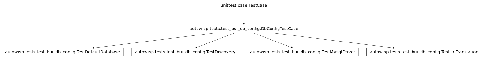
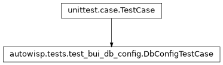
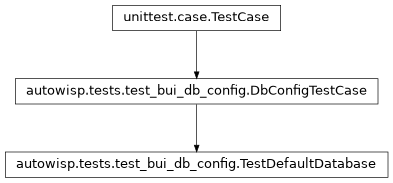
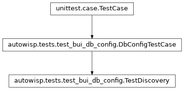
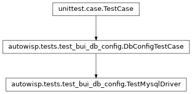
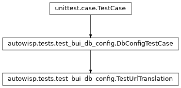

autowisp.tests.test_bui_db_config module
Class Inheritance Diagram

Tests for resolving which database the browser interface uses.
These exercise django_project.db_config directly rather than through
settings, because the setting is read once at import time and cannot be
re-resolved afterwards.
- class autowisp.tests.test_bui_db_config.DbConfigTestCase(methodName='runTest')[source]
Bases:
TestCase
Base giving each test an empty data directory and no environment.
- class autowisp.tests.test_bui_db_config.TestDefaultDatabase(methodName='runTest')[source]
Bases:
DbConfigTestCase
An unconfigured installation keeps working untouched.
- class autowisp.tests.test_bui_db_config.TestDiscovery(methodName='runTest')[source]
Bases:
DbConfigTestCase
Where the URL is looked for, and in what order.
- class autowisp.tests.test_bui_db_config.TestMysqlDriver(methodName='runTest')[source]
Bases:
DbConfigTestCase
Django’s MySQL backend is made to work with the driver present.
- class autowisp.tests.test_bui_db_config.TestUrlTranslation(methodName='runTest')[source]
Bases:
DbConfigTestCase
A URL becomes Django’s DATABASES dictionary.
- test_mysql_url_is_mapped_field_by_field()[source]
The spelling matches the project database’s own URLs.
- test_sqlite_url_supplies_the_path()[source]
An explicit SQLite file may live outside the data directory.
- test_unsupported_backend_is_refused()[source]
Refused rather than half-supported.
core.timestamp_triggersimplementsmodifiedtriggers for SQLite and MySQL only, so accepting another backend would leave the column silently unmaintained.
- translate(url)[source]
Return the
defaultentry url maps to, driver aside.Whether a driver can be loaded is
TestMysqlDriver’s question, and it is stubbed out here so that this one – pure string handling – is answered everywhere rather than only where a driver happens to be installed. Which is one cell of the test grid:pip install .brings neithermysqlclientnorpymysql, a MySQL browser-interface database being an option rather than the default.